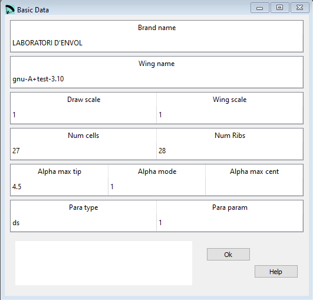
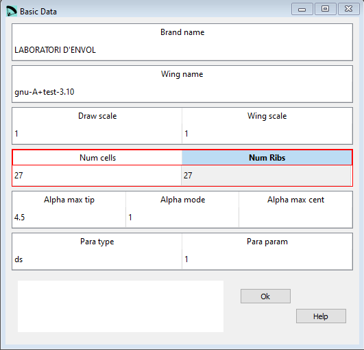

Basic data¶
In the Basic data window you can edit a subset of the parameters from the first section in the lep file.
{kind=link}
Raw data:
**************************************************************
* 1. GEOMETRY *
**************************************************************
* Brand name
"LABORATORI D'ENVOL"
* Wing name
"gnu-A+test-3.10"
* Drawing scale
1.
* Wing scale
1.
* Number of cells
27
* Number of ribs
28
* Alpha max and parameter
4.5 1
* Paraglider type and parameter
"ds" 1
Drawing scale¶
A drawing scale of 1 means that the drawings will be created in a scale of 1:1.
Wing scale¶
With the wing scale you can scale the whole design in once without chaning every single parameter. A Wing scale of 1 means that the whole design is created with the original values as edited in the GUI.
Number of cells and ribs¶
There’s a direct connection between the number of ribs and cells. If there are values which can not be achieved pyhisically the input fields will be marked in red.
{kind=link}
Depending of the setting for the ribs other windows (e.g. Geometry and Anchor points) will be adapted as well.
Maximun allowed number of ribs is 100 per side (200 ribs or 199 cells).
Max torsion angle¶
Maximum torsion angle (washin) between central airfoil and tips.
Alpha max tip¶
Defines the max torsion angle in the wing tip.
Alpha mode¶
“0” the washin will be done manually as shown in the figure below
“1” then washin will be done proportinal to the chord, being maximun and positive at the tip, based on the first parameter.
“2” then automatic washin angles are set from center airfoil to wingtip. If you set “2” then you have to define a 3rd parameter the washin in the central airfoil must be defined additionally.

Alpha max cent¶
If Alpha mode ist set to “2” then you must define in here the wasin angle for the central airfoil.
Paraglider type and parameter¶
Para type¶
“ds” the design and calculation parameters are adjusted to create paragliders and parachute of double surface airfoils (intrados and extrados)
“ss” the design and calculation parameters are adjusted to create single skin paragliders and parachutes, surfaces corresponding to the intrados are not draw. But it is not enough to indicate this parameter to create single skin paraglider. It is necessary to define an special intrados sawtooth profile (or parabolic shaped), so that the vertices of the triangles are located exactly at the point where is defined the anchor points. As a general rule, we use covers of the air intakes, as part of the sigle skin profile.
“pc” the design and calculation parameters are adjusted to create parachutes using double surface airfoils (intrados and extrados).
Para parameter¶
“0” leading edge triangles will be rotated. This parameter applies to “ss” wings only.
“1” leading edge triangles will be not rotated. This parameter applies to “ss” wings only.

A more detailed description you can find here Laboratori d'envol website.